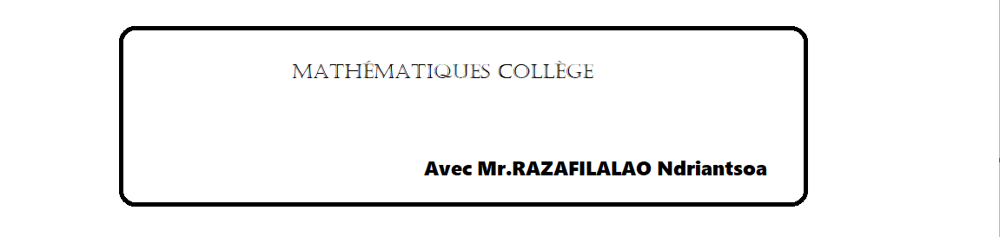

Classe de 6ème:
Cliquer sur les textes en bleus pour télécharger
Chapitre 1
Programme scolaire 6ème
Chapitre 1: Ecriture et lecture de nombres entiers avec corrigé
Chapitre 1: Ecriture et lecture de nombres décimaux avec corrigé
Chapitre 1: Décompositions de nombres avec corrigé
Chapitre 1: Demi-droite graduée avec corrigé
Chapitre 1: Ordre et comparaison avec corrigé
Bonus: Conversion d'unités de longueur avec corrigé